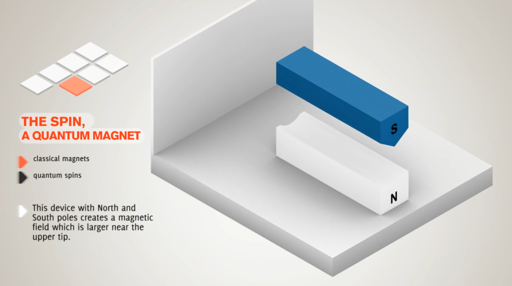

Quantum Mechanics
Double-silt experiment [play the animation video1 shown in Figure [1.1](#fig:double silt experiment): the double-slit interference experiment can be done with a single photon. Moreover, if we place a measurement device behind the double silts, the interference phenomenon will disappear (it seems the photon knows it is being watched). How is one to understand this phenomenon?
{#fig:double silt experiment width="50%"}
Explanations: two important concepts can be derived from the above experiment:
-
Superposition. Let the state of the quantum system be given by . It is incorrect to say that the probability of the photon's being in position is . Rather, to be in state means that the particle is in some sense in all positions simultaneously. To explain the above double-silt experiment, the photon passes through the top slit and the bottom slit simultaneously, and when it exists both slits, it can cancel itself out. A photon is not in a single position, rather it is in many positions, a superposition.
-
Measurement. Seeing things existing in many positions simultaneously is counter-intuitive. Our daily-life experience tells us that things are in one position or (exclusive or!) another. How can this be? The reason we see particles in one particular position is because we have performed a measurement. When we measure something at the quantum level, the quantum object that we have measured is no longer in a superposition of states, rather it collapses to a single classical state. So we have to redefine what the state of a quantum system is: a system is in state means that after measuring it, it will be found in position with probability .
In the following discussion, superposition and measurement are two important and fundamental concepts rooted in quantum mechanics.
Quantum States
Case 1: position on a line
Consider a subatomic particle on a line where it can only be detected at one of the equally spaced points shown in Figure 1.2{reference-type="ref" reference="fig:positions-in-a-line"}.
<object data="figures/line-position.pdf" type="application/pdf" width="700px" height="700px">
</object>
{#fig:positions-in-a-line width="70%"}
The particle being at the point is denoted as , using the Dirac ket notation . To each of these basic states, we shall associate a column vector:
The state of the particle is a linear combination of , by suitable complex weights, known as complex amplitudes, We say that the state is a superposition of the basic states. represents the particle as being simultaneously in all locations, or a blending of all the .
Thus, every state of our system can be represented by an element of as: The norm square of the complex number divided by the norm squared of , called probability amplitude , will tell us the probability that, after observing the particle, we will detect it at the point : Observe that is always a positive real number and , as any genuine probability should be.
When is observed, we will find it in one of the basic states. We might write it as: \ket{\psi} \longleadsto{2} \ket{x_k} The probability of obtaining after observing is where .
Two typical operations of ket vectors in the Hilbert space:
-
addition:
-
scalar multiplication: It is worthy noting that a ket's length does not matter as far as physics goes. In other words, the ket describes the same physical system as .
Case 2: single-particle spin system
Stern-Gerlach experiment [play the animation video2 shown in Figure [1.3](#fig:Stern-Gerlach experiment){reference-type="ref" reference="fig:Stern-Gerlach experiment"}]: the magnetic field splits the beam of electrons into two streams, found either at the top of the screen or at the bottom, but none in between! Conclusion: when the spinning particle is measured in a given direction, it can only be found in two states, i.e., it spins either clockwise or anticlockwise.
{#fig:Stern-Gerlach experiment width="70%"}
Next, we put the two Stern-Gerlach apparatus (SGA) in different angles, and discuss the observation results.
-
Step 1: SGA experiment. Figure 1.4{reference-type="ref" reference="fig:SGA-0"} shows the particle's spin direction and SGA's placement orientation before measurement (sub-figure A) and after measurement (sub-figure B). After measurement, the particle is prepared in state . If the particle state is not perturbed, and the SGA's placement orientation is kept the same, the following measurements will always have the same results.
{#fig:SGA-0 width="90%"}
-
Step 2: SGA experiment. After preparing the spin by measuring it with SGA, we turn the apparatus upside down and then measure again (Figure 1.5{reference-type="ref" reference="fig:SGA-180"}). What we find is that if we originally prepared , the upside down apparatus records .
{#fig:SGA-180 width="80%"}
-
Step 3: SGA experiment. So far, there is still no difference between classical physics and quantum physics. The difference only becomes apparent when we rotate the apparatus through an arbitrary angle, say radians ( degrees): (1) The apparatus begins in the upright position (with the up-arrow along the z axis). A spin is prepared with . (2) rotate the SGA so that the up-arrow points along the x axis (Figure 1.6{reference-type="ref" reference="fig:SGA-90"}). (3) make a measurement of what is presumably the x component of the spin, . The apparatus gives either or , and the numbers of events and events are statistically equal. In other words, the average value of is zero.
{#fig:SGA-90 width="80%"}
-
Step 4: SGA experiment. Now let's do the whole thing over again, but instead of rotating the SGA to lie on the x axis, rotate it to an arbitrary direction along the unit vector . If lies at an angle with respect to (the prepared spin direction of the particle shown in Figure 1.7{reference-type="ref" reference="fig:SGA-theta"}), each time we do the experiment we get or , and the average value of the measurement is .
{#fig:SGA-theta width="80%"}
Let the probability of measuring is , thus we have the following set of equations: From which we can calculate the measuring probabilities of and .
State representation. According to the previous Stern-Gerlach experiment, particle's spin state can be represented as the superposition of basic states in a specific direction.
-
state along the z-axis can be represented, according to the previous and SGA experiments, as where and are the probability amplitudes meeting the following equation set:
-
state along the x-axis. According to the previous SGA experiments, if SGA initially prepares , and then is rotated to measure , there will be equal probabilities for and . Thus, and must both be equal to . A simple vector that satisfies this rule is: Considering the exclusive constraints between and , i.e., , we have:
-
state along the y-axis. Represent spin states along the y-axis is more complicate because of the following constraints: From which a set of proper representation of state along the y-axis is
Transition amplitude. Suppose the start state is ， the end state is , the transition amplitude is defined as \braket{\psi^{\prime}|\psi} = \begin{bmatrix}\overline{c_0^{\prime}},\ \overline{c_1^{\prime}},\ \cdots,\ \overline{c_{n-1}^{\prime}}\end{bmatrix} \begin{bmatrix}c_0\ c_1\ \vdots\ c_{n-1}\end{bmatrix} =\sum_{k=0}^{n-1}\overline{c_{k}^{\prime}}\times c_k where is called the bra vector of the corresponding ket vector .
We can represent the start state, the ending state, and the amplitude of going from the first to the second as the decorated arrow: \ket{\psi} \stackrel{\braket{\psi^{\prime}|\psi}}{\longleadsto{2}} \ket{\psi^{\prime}}\
::: note note:transition-amplitude The transition amplitude between two states may be zero. In fact, that happens precisely when the two states are orthogonal to one another. This simple fact hints at the physical content of orthogonality: orthogonal states are as far apart as they can possibly be. We can think of them as mutually exclusive alternatives: for instance, an electron can be in an arbitrary superposition of spin up and down, but after we measure it in the z direction, it will always be either up or down, never both up and down. :::
We can express in the orthonormal basis as where the probability amplitude is also the transition amplitude, i.e., , and that .
Observables and Measuring
Basic concepts
Specification of a physical system: On the one hand, its state space, i.e., the collection of all the states (discussed in the previous section), and on the other hand, observable set, i.e., the physical quantities observed in each state of the state space.
Observable: A specific question we pose to the system. For example, if the system is currently in some given state , which values can we possibly observe?
Measuring: The process of asking a specific question and receiving a definite answer.
The measurement operations in classic and quantum physics are inherently different. Figure 1.8{reference-type="ref" reference="fig:measurement-comparison"} shows two key differences.
{#fig:measurement-comparison
width="\textwidth"}
The principles
In this part, we present the five principles about the observing and measurement. The first four principles do not involve the evolution of state-vectors with time.
-
Principle 1: The observable or measurable quantities of quantum mechanics are represented by linear operators , which must also be Hermitian3.
-
Principle 2: The possible results of a measurement are the eigenvalues of the operator that represents the observable. The collapsed state is the related eigenvector of the operator that represents the observable. If the system is in the eigenstate , the result of a measurement is guaranteed to be .
::: example ex:line In this example, the most obvious observable is position. As we have stated already, each observable represents a specific question we pose to the quantum system. Position asks: "Where can the particle be found?" Which hermitian operator corresponds to position? We are going to tell first how it acts on the basic states: Considering is the one-hot vector with only the -th element equals to , we have \mathbf{P}=\begin{bmatrix} x_0 & 0 & \cdots & 0\ 0 & x_1 & \cdots & 0\ \vdots & \vdots & \ddots & \vdots\ 0 & 0 & \cdots & x_{n-1} \end{bmatrix} :::
::: example ex:spin Let's recall the previous Stern-Gerlach experiment, in which a particle with vertical upward spin passing through a z-axis-directional upward SGA generates "+1" observation value and its spin state is kept upward. Meanwhile, given a particle with vertical downward spin, its SGA observation reads "-1" value and its spin state is kept downward. Hence we have the following formulations: Let , , and , the above set of equations can be re-formulated and the matrix of x-axis spin operator can be calculated \begin{cases} \begin{bmatrix} (\sigma_z){11} & (\sigma_z){12}\ (\sigma_z){21} & (\sigma_z){22} \end{bmatrix} \begin{bmatrix} 1 \ 0 \end{bmatrix}= \begin{bmatrix} 1 \ 0 \end{bmatrix}\\
\begin{bmatrix} (\sigma_z)_{11} & (\sigma_z)_{12}\\ (\sigma_z)_{21} & (\sigma_z)_{22} \end{bmatrix} \begin{bmatrix} 0 \\ 1 \end{bmatrix}= -\begin{bmatrix} 0 \\ 1 \end{bmatrix}\\ \end{cases} \quad \Rightarrow\quad \mathbf{\sigma}_z=\begin{bmatrix} 1 & 0 \\ 0 & -1 \end{bmatrix} Similarly, the matrices of x-axis spinoperator and y-axis spin operator can be written as \mathbf{\sigma}_x=\begin{bmatrix} 0 & 1 \ 1 & 0 \end{bmatrix}\quad \textrm{and} \quad \mathbf{\sigma}_y=\begin{bmatrix} 0 & -i \ i & 0 \end{bmatrix} :::
::: note note:operator There are some truths and misconception about the measurement operator:
Truths: (1) Operators are the things we use to calculate eigenvalues and eigenvectors; (2) Operators act on state-vectors (which are abstract mathematical objects), not on actual physical systems; (3) When an operator acts on a state-vector, it produces a new state-vector.
Misconception: When a measurement operator acts on a state-vector, it produces a new state-vector, but that operation is in no way the same as acting on the state with the operator . The former, , means a state collapse and the formulation only valid when is the eigenvector of . The latter, , is always valid and means that a state transition from the original state to a new state . :::
-
Principle 3: Unambiguously distinguishable4 states are represented by orthogonal vectors. Inner product of two states is a measure of the inability to distinguish them with certainty.
-
Principle 4: If is the state-vector of a system, and the observable is measured, the probability to observe value is: But, in general, there is no way to tell for certain which of these values will be observed. There is only a probability , expressed in terms of the overlap of and , describing that the outcome will be .
-
Principle 5: The evolution of a quantum system (that is not a measurement) is given by a unitary operator or transformation, i.e., .
The expected value of observing
Suppose that is the list of eigenvalues of a measurement operator . Let us prepare our quantum system so that it is in state and let us observe the value of . We are going to obtain one or another of the aforementioned eigenvalues. Now, let us start all over again many times, say, times, and let us keep track of what was observed each time. At the end of our experiment, the eigenvalue has been seen times, where (in statistical jargon, its frequency is ). Now perform the calculation If is sufficiently large, this number (known in statistics as the estimated expected value of ) will be very close to .
Multiple-step observing
Before we investigate the multiple-step observing, let's first consider what happens after single-step observing. Suppose the quantum system state is , and the observing operator is (with eigenvalues and corresponding eigenvectors as the previous section). After one-step observing, we first get an answer with probability . Then, the system's state collapse from to the corresponding eigenstate as shown in Figure 1.9{reference-type="ref" reference="fig:observing-collapse"}.
According to the above discussion, observing in the quantum world will necessarily lead to state collapse. Hence, the result of multiple-step observing depends on the observing order. Take Figure 1.10{reference-type="ref" reference="fig:observing-order"} as an example, given the quantum state , the result of two-step observing of "" is zero, but if we insert an intermediate observing, i.e., , then the result of three-step observing of "" is not zero.
{#fig:observing-collapse
width="\textwidth"}
{#fig:observing-order width="60%"}
Dynamics
The process of quantum computing can be generally divided into three steps:
(1) Prepare an initial state ;
(2) Apply a sequence of unitary operators to the state (see Figure 1.11{reference-type="ref" reference="fig:unitary-operators"});
(3) Measure the output and get a final state.
{#fig:unitary-operators width="\textwidth"}
Two reasons why observable operators must be Hermitian: First, the eigenvalues of an operator are real, which is a necessary condition of realistic experiment. Second, the eigenvectors that represent unambiguously distinguishable results must have different eigenvalues, and must also be orthogonal (see principle 2 and 3).
Two states are physically distinct if there is a measurement that can tell them apart without ambiguity. For example, and can be distinguished by measuring . If you are handed a spin and told that it is either in the state or the state , to find out which of the two states is the right one, all you have to do is align SGA with the z axis and measure .